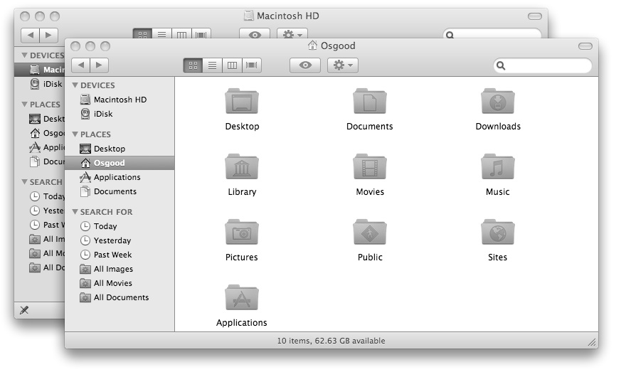

The Index Property
If you’re writing a script that will be used on multiple computers, using the name property to refer to Finder windows is not always the most reliable way to locate a specific window. It’s possible that two windows may have the same name. Another more generic way to refer to an open Finder window is through its index property.
The value of this read-only property is a number corresponding to the window’s layer position in the stacking order of open Finder windows. On the computer, no two windows can occupy the same layer. One window is always on top of or in front of another window. The index property reflects this fact.
For example, the front Finder window will always have an index value of “1,” since it is the first window in the stack of open window, while the last Finder window will always have an index value equal to the number of open Finder windows.
Let’s see how the index property can be used to refer to Finder windows.
First, let’s re-open the previous window using this script:
 A script that creates a new Finder window displaying the contents of the startup disk.
A script that creates a new Finder window displaying the contents of the startup disk.
tell application "Finder" to open the startup disk
Now delete the previous script from the script window, then enter, compile, and run the following script:
 A script that retrieves the value of the index property of the frontmost Finder window.
A script that retrieves the value of the index property of the frontmost Finder window.
tell application "Finder" to
get the index of Finder window "Macintosh HD"
The result of this script, shown in the Results pane, will be the numeric value “1,” since there is only one window currently open on the desktop.
IMPORTANT: Note the use of the special character (¬) in the script text in the following example. This character, generated by typing option-L or option-Return, is used by the Script Editor to indicate that a single line statement has been placed on multiple lines in order to make it easier read. Due to the space restrictions involved in displaying scripts in a book, this character will be used in all script examples containing long statements. The Script Editor has an auto-wrapping feature that makes the use of this character unnecessary. If you are using the Script Editor, ignore the special character and continuing entering the script on the same line.
Let’s open a second window. Delete the previous script from the script window, then enter, compile, and run the following script:
 A script to open a second Finder window.
A script to open a second Finder window.
tell application "Finder" to open home
A second window displaying the contents of your home directory will now appear on the desktop.
TIP: Note the use of the word “home” and “startup disk” in the previous scripts. “Startup disk” and “home” are special terms, reserved by the Finder application, to identify important locations. These terms are generic and will work regardless of how drives and folders are named on the computer.
Now, let’s see if the addition of the new window on the Desktop has effected the index value of our previously targeted window. Delete the existing script from the script window, then enter, compile, and run the following script:
 A script that retrieves the value of the index property of a Finder window specified by its name.
A script that retrieves the value of the index property of a Finder window specified by its name.
tell application "Finder" to get the index of Finder Window "Macintosh HD"
The result of this script is now the numeric value “2” since the target window is the second window in the stack of open windows on the desktop.
{kind=link}

In the Finder, all windows occupy a layer in the stack of open windows. No two windows can occupy the same layer and therefore can overlap each other.
The index property can be also be used to refer to any open window. Try these scripts one a time and note their results:
 Script statements using the value of the index property to retrieve the name of specified Finder windows.
Script statements using the value of the index property to retrieve the name of specified Finder windows.
tell application "Finder" to get the name of Finder Window 1
--> returns the name of your home directory

tell application "Finder" to get the name of Finder Window 2
--> returns the name of your startup disk
Descriptive Index Values
As you've seen in the previous scripts, the AppleScript language is designed to be “English-like” and can be written in a conversational manner. Because of this, the value of the index property can also be described using descriptive terms as well as numeric values. For example, try these two scripts:
 Script statements using descriptive index values.
Script statements using descriptive index values.
tell application "Finder" to
get the index of the first Finder window
--> returns: 1

tell application "Finder" to
get the index of the second Finder window
--> returns: 2
Note the use of the words “first” and “second” for the value of the index property instead of the numbers “1” and “2”. The AppleScript language will accept the terms: first, second, third, fourth, fifth, sixth, seventh, eighth, ninth, and tenth, in place of their corresponding numeric character equivalents.
As a matter of fact, the value of the index property of the previous scripts could also be written like this:
tell application "Finder" to get the index of the 1st Finder window
--> returns: 1
tell application "Finder" to get the index of the 2nd Finder window
--> returns: 2
The use of descriptive suffixes works with any number, not just the first ten: 22nd, 312th, 3rd, etc.
Relative Position
In addition to recognizing index values written as text, AppleScript will also accept index values described in terms of a window’s position relative to other windows. For example:
tell application "Finder" to
get the index of the front Finder window
--> returns: 1
tell application "Finder" to
get the index of the back Finder window
--> returns: 2
tell application "Finder" to
get the index of the last Finder window
--> returns: 2
tell application "Finder" to get the index of the
Finder window before the last Finder window
--> returns: 1
tell application "Finder" to get the index of the
Finder window after the front Finder window
--> returns: 2
The index values in the previous scripts examples were written using the terms: front, back, and last. AppleScript will accept the term middle as well. Also note that the additional terms before and after were used to further define the target window’s location.
Finder Window Index References
The value of the index property can be expressed using any of the previous methods. All are valid and can be used freely and interchangeably. Here’s a summary of the ways a Finder window can be referenced:
by name:
Finder window "Documents"
by numeric index:
Finder window 1
by descriptive index:
the first Finder window
the second Finder window
the fifth Finder window
the 1st Finder window
the 23rd Finder window
by relative position index:
the front Finder window
the middle Finder window
the back Finder window
the last Finder window
by random index:
some Finder window
Changing a Finder window’s index value
So far we’ve examined the name and index properties by using them to refer to specific Finder windows. The name property is a read-only property, in other words, its value can be gotten but not changed. However, the index property of a Finder window is an editable property, meaning its value can be altered.
Next, we’ll change the value of the index property of the open Finder windows. To change the value of a property, we’ll use the verb “set” in our scripts. Set is the verb or command used to change the value of a property.
Delete the previous script from the script window, then enter, compile, and run the following script:
 A script statement that moves the last Finder window to the front.
A script statement that moves the last Finder window to the front.
tell application "Finder" to
set the index of the last Finder window to 1
The Finder window displaying the contents of your home directory is now the front Finder window again. The script accomplishes this by using the value of the index property of the last Finder window as the value for the index property of the front Finder window.
NOTE: When you change the value of the index property of a Finder window, you may change the index value of some of the open Finder windows behind it.